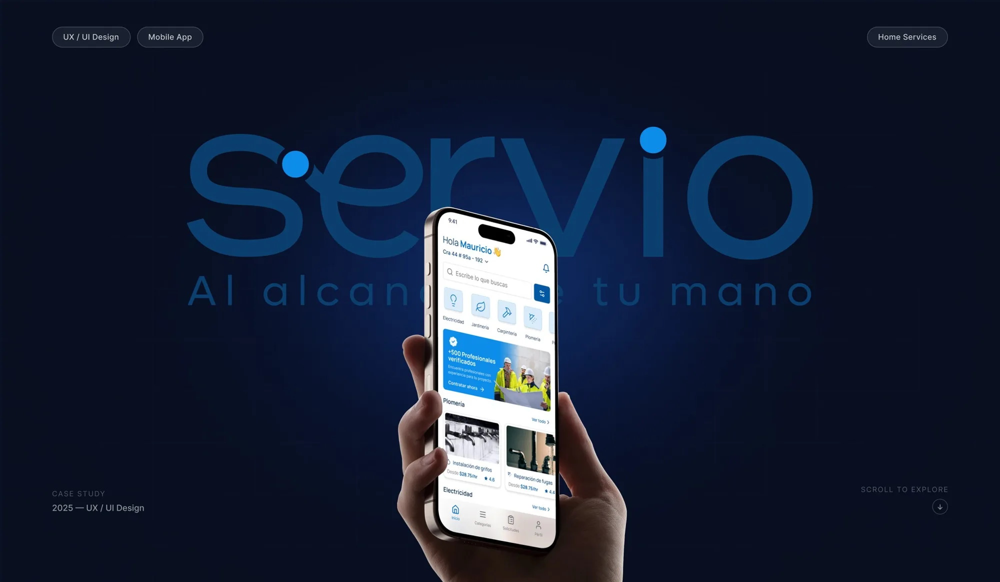
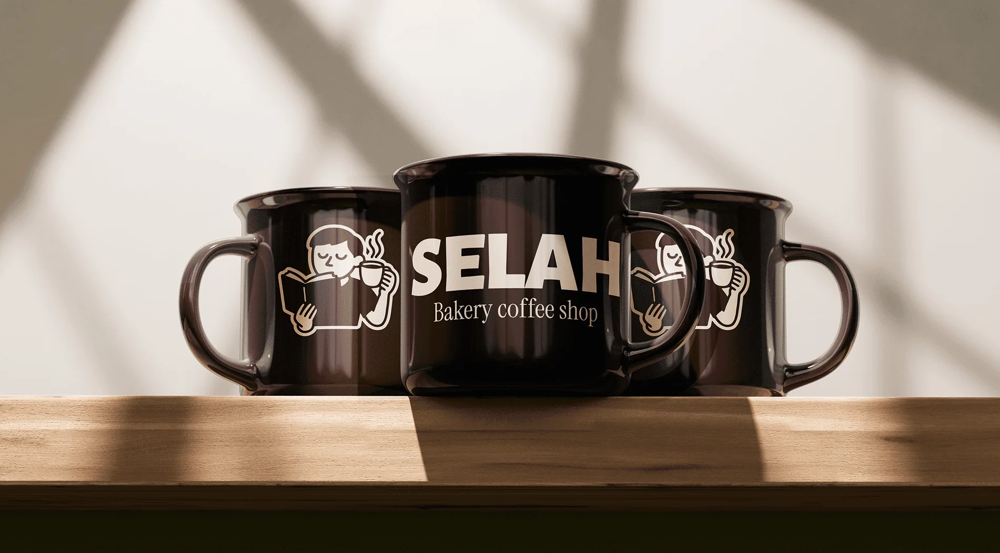
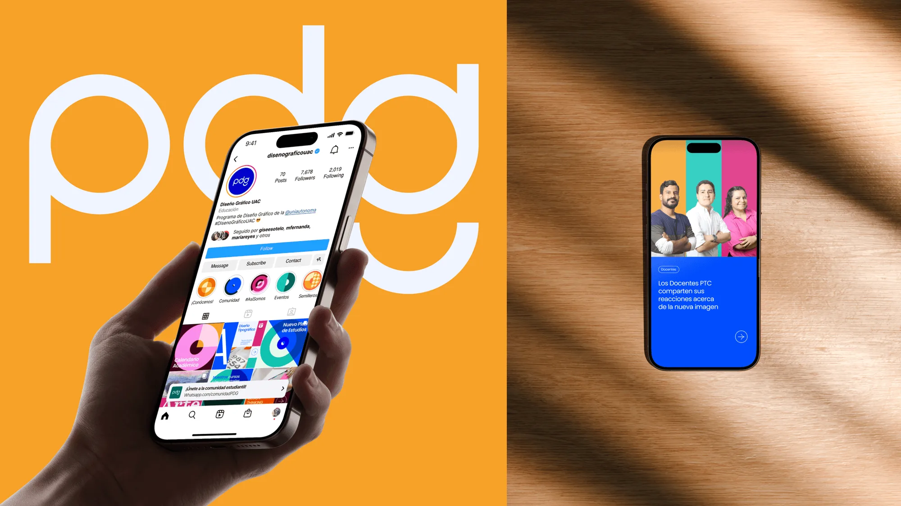
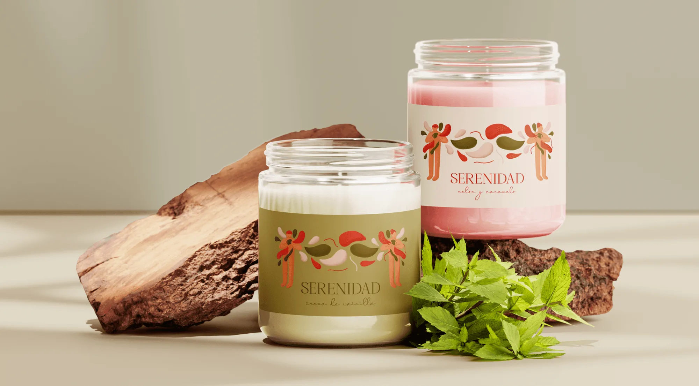

Meta Ads
Anuncios para Meta (Facebook e Instagram) de diferentes marcas. Diseñé piezas enfocadas en resultados que convierten el mensaje de cada marca en visuales que detienen el scroll, adaptando el tono y el estilo de la tecnología a los servicios legales y las finanzas.

Mawi
Mawi necesitaba una identidad dulce y alegre para sus postres colombianos: bolis, galletas y brownies. Diseñé el logo y la identidad visual, creando un universo divertido de colores cálidos, formas orgánicas y tipografía expresiva donde cada antojo se convierte en un momento especial.

Sanca
Sanca necesitaba una marca y una landing page que le hablaran directamente a pequeños contratistas. Diseñé el logo y el sitio web, creando un sistema visual donde la claridad, la confianza y una experiencia bilingüe convierten una herramienta de construcción compleja en un camino simple para registrarse.

Simple Protein For Pets
Simple Protein for Pets necesitaba una experiencia de e-commerce clara y enfocada en la conversión. Diseñé el sitio web, creando un sistema visual donde la claridad, la confianza y la usabilidad hacen la compra fluida.

Servio App
Servio necesitaba una identidad moderna para simplificar el acceso a servicios para el hogar. Diseñé el branding y la experiencia móvil, creando un sistema visual donde la claridad, la confianza y la eficiencia hacen el recorrido del usuario fluido.

Selah Coffee Shop
Selah necesitaba una identidad acogedora que transmitiera calma y pausa en medio del día. Diseñé el branding, las ilustraciones y el empaque, creando un universo visual donde el café, el pan y la introspección se conectan como experiencia de marca.

Programa de Diseño Gráfico
Proyecto académico de rebranding para el Programa de Diseño Gráfico de la Universidad Autónoma del Caribe. El proyecto incluyó estrategia de marca, identidad visual, campañas digitales y gráficos en movimiento.

Cabernet Charmante
Este proyecto académico exploró la creación de una etiqueta de vino que equilibra la elegancia. Diseñé una identidad conceptual donde la tipografía y los elementos visuales reflejan tradición, exclusividad y refinamiento dentro de la industria del vino.

Mar de colores
Este proyecto personal explora la intersección entre la fotografía y la ilustración a través de intervenciones digitales. Con capas de trazos, texturas y paletas de color expresivas, transformé imágenes cotidianas en narrativas visuales únicas que resaltan la identidad, la creatividad y la conexión emocional.

Serenidad
Serenidad es un proyecto académico de branding que transforma el concepto de calma en una experiencia visual. Desarrollé la identidad, la dirección de arte y el empaque de una línea de velas aromáticas, diseñadas para transmitir paz y elegancia.